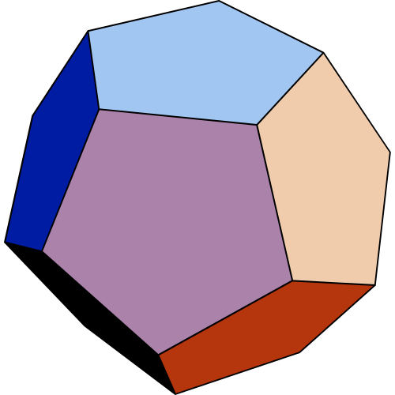
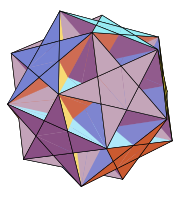
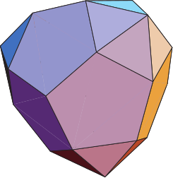
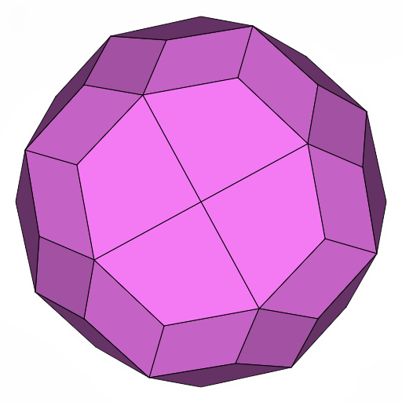

Encyclopedia Polyhedrons
A three-dimensional shape with flat polygonal faces, straight edges, and sharp corners or vertices is called a polyhedron. The plural of a polyhedron is called polyhedra or polyhedrons.
-
Regular Convex Uniform
Platonic solids
The five Platonic solids, also known as the five regular solids, were discovered in ancient times. Although each one was probably known prior to 500 BC, they are collectively named after the ancient Greek philosopher Plato (428-348 BC) who mentions them in his dialogue Timaeus, written circa 360 BC. Each Platonic solid uses the same regular polygon for each face, with the same number of faces meeting at each vertex. The five Platonic solids are the only convex polyhedra that meet these criteria.
-
Regular Star Uniform
Kepler-Poinsot solids

The Kepler-Poinsot solids are the four self-intersecting regular polyhedra. Two of them (the Small Stellated Dodecahedron and the Great Stellated Dodecahedron) were discovered by Johannes Kepler (1571-1630). The other two (the Great Dodecahedron and Great Icosahedron) were discovered by Louis Poinsot (1777-1859) and are the duals of the two Kepler solids. Like the Platonic solids, these solids are regular because each uses the same regular polygon or star polygon for each face, with the same number of faces meeting at each vertex.
-
Quasiregular Convex Uniform
Archimedean & Catalan solids

Text.
-
Quasiregular Star Uniform
Text.
-
Semiregular Convex Uniform

Text.
-
Semiregular Star Uniform

Text.
-
Johnson Solids
The Platonic solids, Archimedean solids, and the regular prisms and antiprisms are vertex-transitive convex polyhedra with regular polygon faces. Vertex transitivity means that for any two vertices of the polyhedron, there exists a translation, rotation, and/or reflection that leaves the outward appearance of the polyhedron unchanged yet moves one vertex to the other. What happens if the vertex transitivity criterion is removed? As it turns out, there are 92 non-vertex-transitive convex polyhedra with regular polygon faces. In 1966, Norman Johnson published a paper titled "Convex Polyhedra with Regular Faces" where he described in detail all 92 of these polyhedra. He introduced names for those that weren't named previously, and he mentions that there appear to be no more than 92 of them. These 92 polyhedra are currently known as the Johnson solids. In 1967, Viktor Zalgaller proved that there are no more than 92.
-
Others
Text.